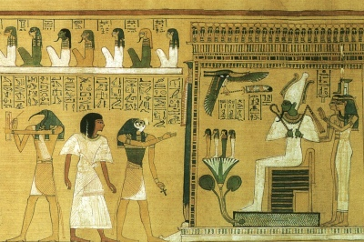

Sacred Texts
Ancient Egypt
|

|
Ancient Egyptian Legends
by M. A. Murray
[1920]
|
Contents
Start Reading
Page Index
Text [Zipped]
This entry in the Wisdom of the East
series covers the mythology of the Egyptian gods and godesses.
The author, Margaret Alice Murray,
wrote other books about Ancient Egypt, as well as
The Witch Cult in Western Europe,
an early study of whether the witch trials had any underlying reality.
Title Page
Preface
Table of Contents
Editorial Note
I: The Princess and the Demon
II: The King's Dream
III: The Coming of the Great Queen
IV: The Book of Thoth
V: Osiris
VI: The Scorpions of Isis
VII: The Black Pig
VIII: The Battles of Horus
IX: The Beer of Heliopolis
X: The Name of Ra
XI: The Regions of Night and Thick Darkness
Notes
Index of Names of Gods
Advertisements